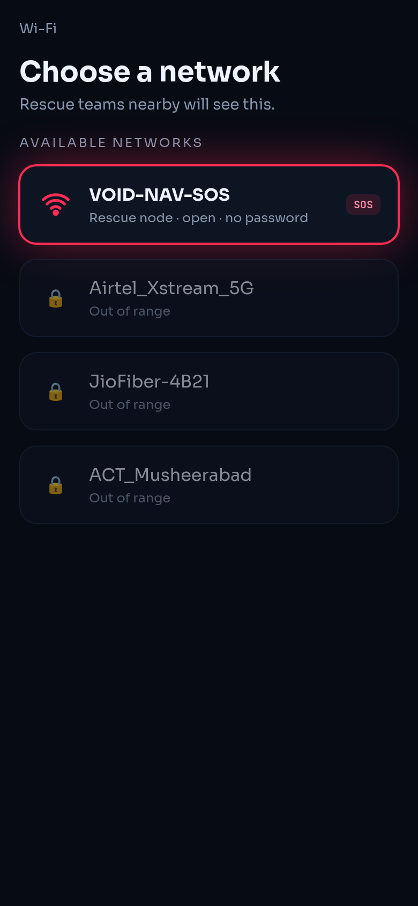
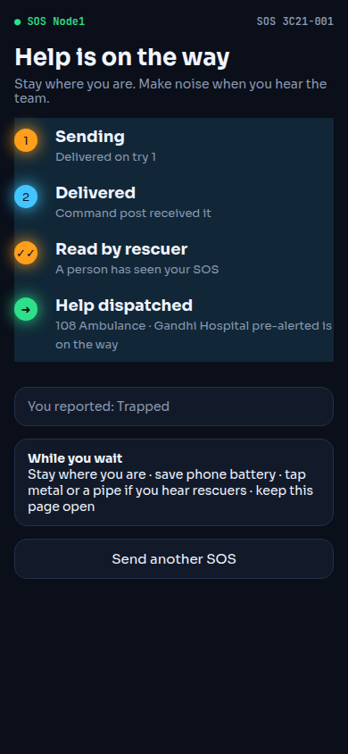
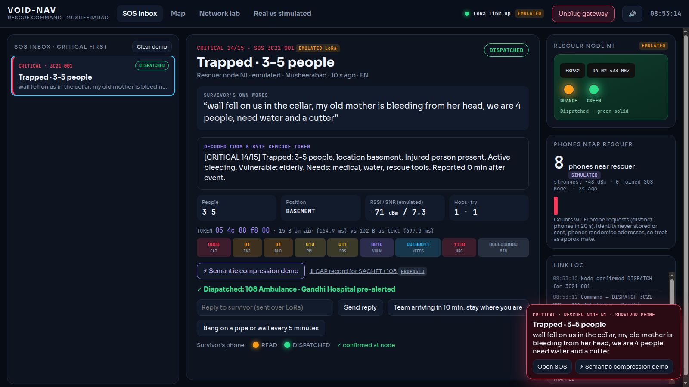
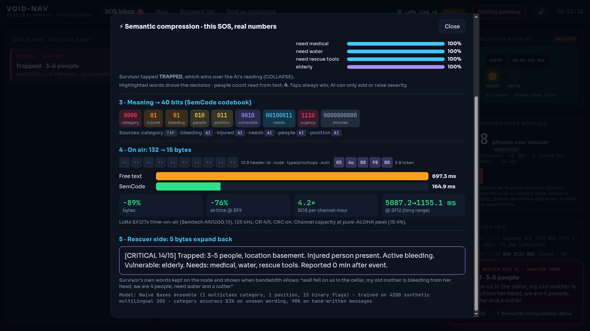
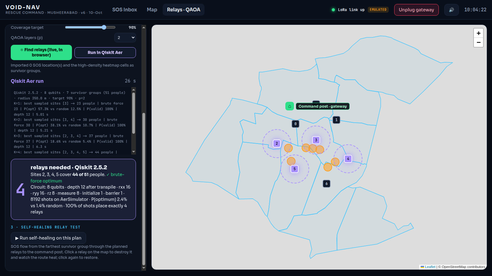
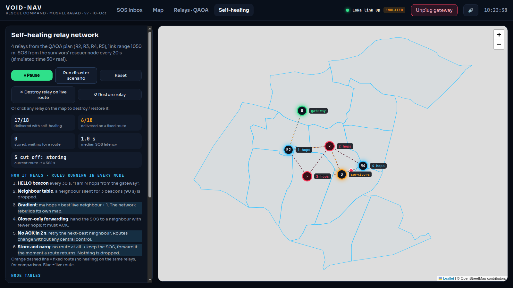

An instant private network that rescuers carry into a disaster zone. Any phone can send an SOS with no app, no SIM and no internet, and the survivor gets an answer back: Delivered → Read by rescuer → Help dispatched.
Earthquakes, floods and cyclones take out power and cellular first. Survivors' phones still work; there is just no network.
Cell Broadcast / SACHET can warn people but cannot hear back from someone trapped.
Meshtastic, goTenna and rescue watches need hardware bought and set up before the disaster.
Even when an SOS gets out, the survivor never learns it was read or that help is coming.
The rescuer node opens a Wi-Fi hotspot and counts nearby phones from their Wi-Fi “probe” signals. The count becomes a heatmap of where to search. Survivors join and send an SOS.
An on-device AI model reads what the survivor typed in English, Hindi, Telugu or Hinglish. It sends 5 bytes of meaning over long-range radio instead of 100+ bytes of text.
Command sees the alert, opens it (READ) and dispatches a team or a 108 ambulance. Each status travels back to the survivor's phone with a tone and vibration.
No towers · no internet · no app · no SIM · no cloud. The radio is LoRa at 433 MHz: kilometres of range on milliwatts.

Joins “SOS Node1”

Sees Read → Help on the way

Command dashboard: critical-first inbox, survivor's own words, decoded report, 108 dispatch
Node retries up to 8 times until command ACKs.
Opening the card marks it read. It cannot be undone.
Team or 108 ambulance plus hospital pre-alert.
“Team arriving in 10 min” pops up on the phone.

Every SOS has a “Semantic compression demo” button showing its own real numbers. The model is a multilingual Naive Bayes ensemble we trained (17 heads, English/Hindi/Telugu/Hinglish). It is deterministic and never invents details; the survivor's taps always win.

One qubit per candidate rooftop. The circuit only explores plans with exactly K relays and favours plans that cover more people. A classical optimiser tunes it. Run in Qiskit Aer (8,192 shots) and checked against brute force.
| K relays | People covered | Brute force | QAOA finds best | Random |
|---|---|---|---|---|
| 2 | 35 / 64 | 35 ✓ | 36% | 11% |
| 3 | 50 / 64 | 50 ✓ | 16% | 4% |
| 4 | 59 / 64 (92%) | 59 ✓ | 12% | 1.4% |

Every node beacons “I'm N hops from the gateway”. Each hands an SOS only to a closer neighbour, which must acknowledge it. With no ACK it tries the next-best neighbour; with no route at all it stores the SOS and carries it. Nothing is dropped.
Simulated with the firmware's own rules. Team simulator: 119/119 vs 29/119.
Survivor SOS page · rescuer-node firmware (Wi-Fi + LoRa + phone scan) · gateway firmware · offline command dashboard · trained AI compressor · QAOA planner in Qiskit · self-healing simulator.
Multi-hop relay chain (we own one relay) · survivor-density heatmap of the scenario · the LoRa link when the boards are not on the table.
CAP export to SACHET / state control rooms / 108 when any backhaul exists · encryption · GPS per node · 865 MHz modules for production.
Customers: NDRF · SDRF · district disaster authorities · fire services · large events · defence.